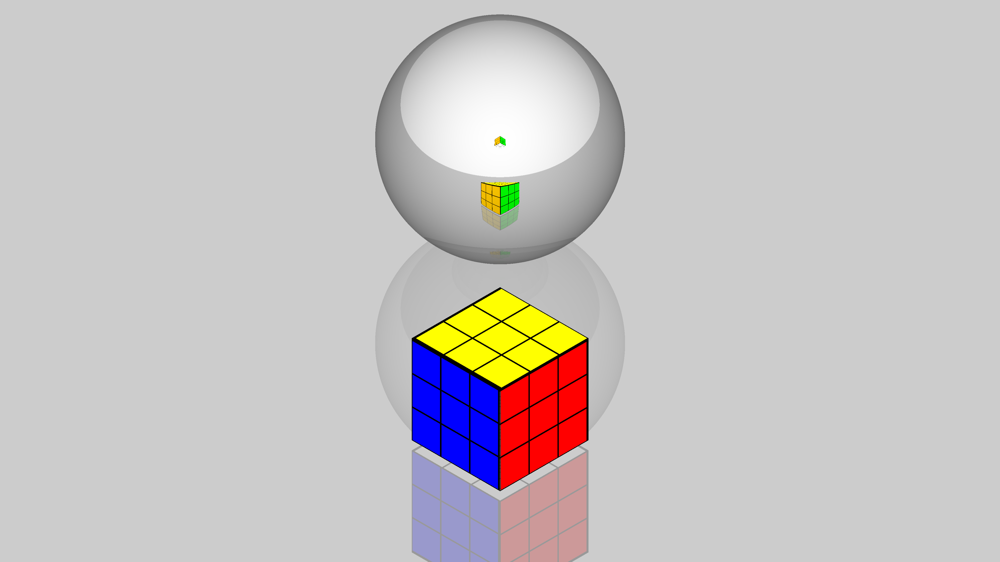
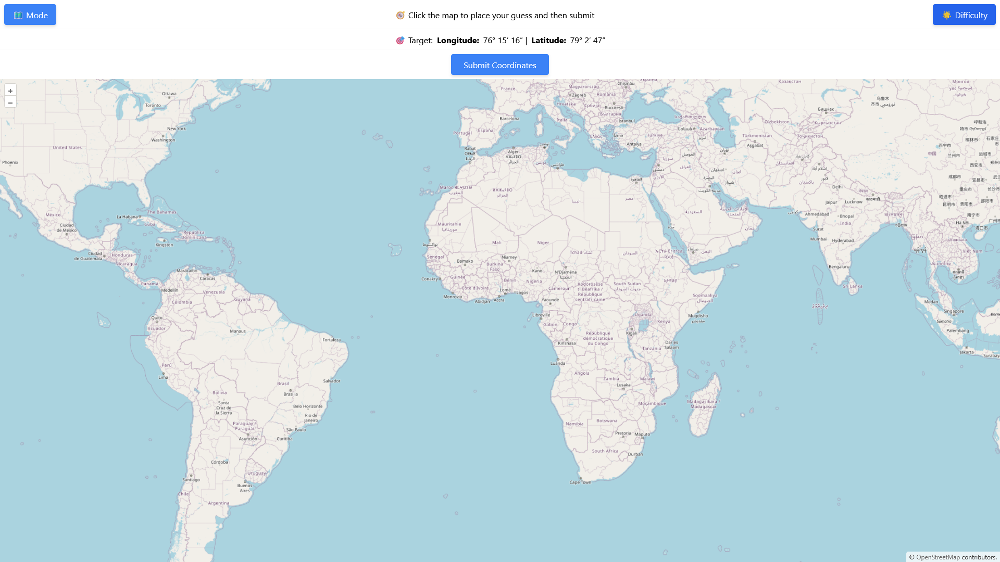
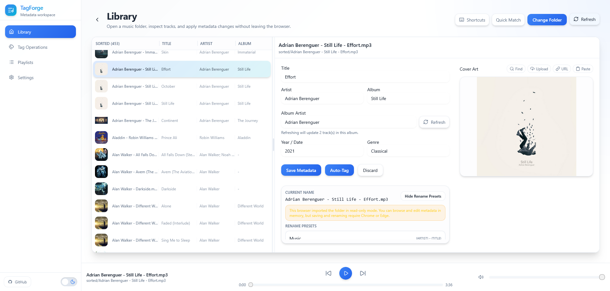
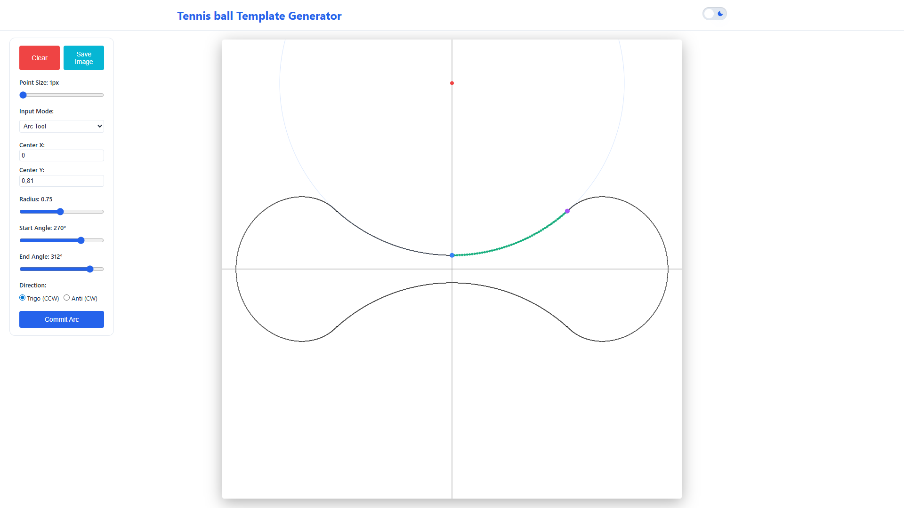
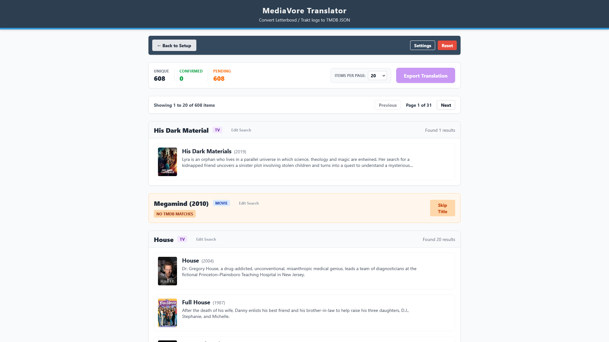

Explore my prototypes, research, and creative projects — all in one place.
A C++ robotics prototype that combines a camera-driven control loop, servo control, and balancing logic for a physical build.
A multi-language Sudoku solver set with brute-force and procedural strategies, split across C++, Java, and Rust implementations.

A Java ray-tracing sandbox focused on reflections, spheres, planes, and experimenting with the math behind light interactions.
A year-by-year Advent of Code archive, mostly in Haskell, with shell, Python, and occasional array-language experiments.

A GeoGuessr-style map game built around exploring locations, guessing coordinates, and switching between light and dark basemaps.

A browser-based local audio tag editor that uses the File System Access API to scan folders, edit metadata, rename files, and export playlists without a backend.
Made completely using AI

An interactive tennis-ball template generator built around a math-driven point generator and 4-way symmetry on a custom canvas grid.
UI/UX created with AI; math & logic by author

A browser-based converter that turns CSV, JSON, and YAML media logs into TMDB-shaped JSON with title matching and repeated lookup caching.
Built with AI assistance